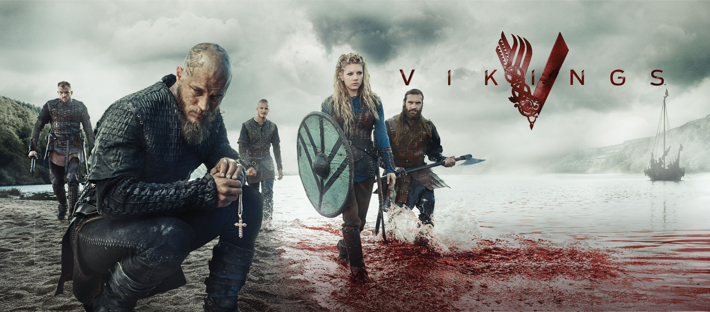

Merhaba, Ben Mücahit. Basketbol oynamaktan hoşlanıyorum...
Vikings
Vikings, "Vikingler" tarihsel drama türünde bir Kanada-İrlanda ortak yapımı televizyon dizisi.Yazarlığını ve yapımcılığını Michael Hirst'in yaptığı dizi History kanalında yayınlanmaktadır.ABD ve Kanada'da 3 Mart 2013 günü yayına başlamıştır.